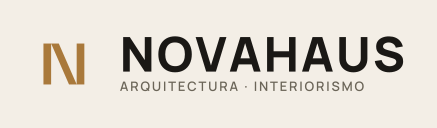
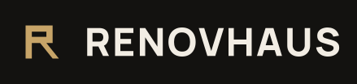

Construcción del ícono
El monograma nace de una barra vertical, un ojal rectangular y una diagonal de salida — la construcción geométrica de la letra R, contenida en un marco cuadrado con esquinas ligeramente redondeadas. Toda proporción está definida como porcentaje del lado del ícono, para que la construcción se mantenga idéntica en cualquier tamaño.
- Margen interior — 18% del lado, en los cuatro costados
- Grosor de cada trazo — 12% del lado
- Radio de esquina del marco — 8% del lado
Variantes del logotipo
Seis versiones cubren los usos principales de la marca. Descarga el SVG directamente — son archivos vectoriales editables, no imágenes rasterizadas.
logo-primary-dark.svg
Lockup completo, para fondos oscuros
Descargar SVG
{kind=link}

logo-primary-light.svg
Lockup completo, para fondos claros
Descargar SVG
{kind=link}
logo-icon-only.svg
Solo el monograma — favicon / avatar
Descargar SVG
{kind=link}

logo-compact.svg
Ícono + wordmark, sin subtítulo — footer, firma de correo
Descargar SVG
{kind=link}
logo-monochrome-white.svg
Un color, blanco — superposición sobre fotos o fondos de color
Descargar SVG
{kind=link}
logo-monochrome-black.svg
Un color, negro — impresión a una tinta
Descargar SVG
{kind=link}
Paleta de color
Haz clic en un color para copiar su código hex.
Reglas de uso
Tamaño mínimo
El ícono no debe reproducirse a menos de 24px de
alto. El lockup completo (ícono + wordmark) no debe bajar de
120px de ancho — por debajo de eso, usa
logo-icon-only.svg solo.
Espacio de protección
Deja siempre un margen libre alrededor del logo de al menos el grosor de una barra del ícono (12% de su alto). Ningún texto, borde o imagen debe invadir ese espacio.
Contraste de color
El dorado sobre fondo claro (#A9793B sobre
#F3EEE6) da un contraste de ~3.3:1 — válido para
títulos grandes o el ícono, pero no para texto de
cuerpo. Usa siempre #1A1815 para párrafos sobre fondo
claro.